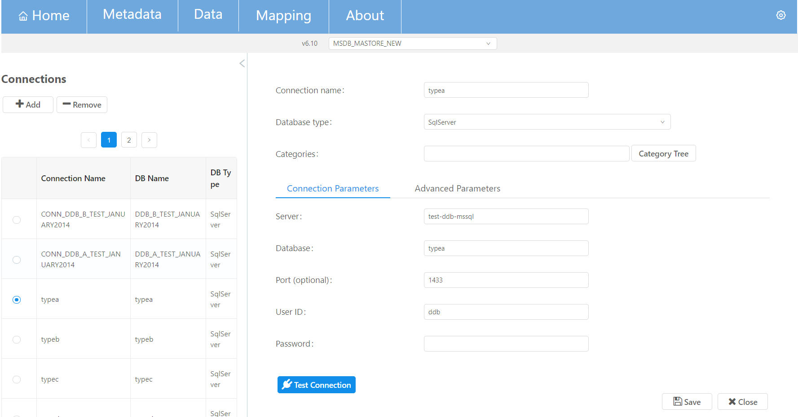

This screen supports adding/editing/deleting a Dissemination database (DDB). On the left side of the screen there is a table with all existing Dissemination databases. On the right side there are the connection details of the selected Dissemination database.

The DDB connection settings are the following:
| Option | Description |
|---|---|
| database-type | The database type. Options: [Oracle, MySQL, SqlServer]. |
| Server | The Server domain. |
| Database | The Database name. e.g. typea |
| username | The user name for obtaining connections. |
| password | The password for obtaining connections. |
A user can use the buttons Add and Remove to add and delete a DDB. Remove button is enabled when user selects (through the radio button) the DDB that he wants to delete. To edit a DDB, the user can select it from the left sidebar, make the appropriate changes and press save button. Advanced properties of the database connection can also be edited through the Advanced Parameters tab.
The category tree button opens a pop up where a user can select the related Categories and Dataflows to link with the corresponding DDB.